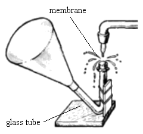

IYPT 2001 Problems
Problems for the 14th IYPT 2001
1. Electrostatic motor
Is it possible to create a motor which works by means of an electrostatic field? If yes, suggest how it may be constructed and estimate its parameters.
2. Singing saw
Some people can play music on a handsaw. How do they get different pitches? Give a quantitative description of the phenomenon.
3. Tuning dropper
Make the music resonator shown in the picture.

Investigate the conditions that affect the pitch. Can you observe amplification of external sounds? If yes, how can you explain this?
4. Dancing sand clock
Investigate the trickling of sand when a sand clock (egg-timer) is placed on a vibrating base.
5. Rubber heat machine
Investigate the conversion of energy in the process of deformation of rubber. Construct a heat machine, which uses rubber as the working element and demonstrate how it works.
6. Fractal diffraction
Produce, demonstrate and analyse diffraction pictures of fractal structures of different orders.
7. Cracks
When drying a starch solution, you will see cracks forming. Investigate and explain this phenomenon.
8. Speedometer
Two electrodes of different metal are immersed in an electrolyte solution.Investigate the dependence of the measured potential difference on the relative motion of electrodes and their shapes.
9. Pouring out
Investigate how to empty a bottle filled with a liquid as fast as possible, without external technical devices.
10. Water stream pump
Construct and demonstrate a water stream vacuum pump. What is your record value for the minimum pressure?
11. Rolling balls
Place two equal balls in a horizontal, V-shaped channel, with the walls at 90 degrees to each other, and let the balls roll towards each other. Investigate and explain the motion of the balls after the collision. Make experiments with several different kinds of ball pairs and explain the results.
12. Reaction
Make an aqueous solution of gelatine (10g gelatine in 90ml of water), heat it to 80 degrees C in a water bath and mix it with a solution of potassium iodide. Pour the solution in a test tube and cool it. Pour a solution of copper sulphate on the surface of the gel. Find a physical explanation to the observed phenomena.
13. Membrane electrolyser
In an electrolyser, containing a membrane which completely divides the space between two inert electrodes, the pH-value of the diluted salt solution will change substantially after electrolysis. Investigate how this difference depends on the pore size of the membrane.
14. Thread dropper
One end of a thread is immersed in a vessel filled with water. The other end hangs down outside without contact with the outer wall of the vessel. Under certain conditions, one can observe drops on that end of the thread. What are those conditions? Determine how the time of appearance of the first drop depends on relevant parameters.
15. Bubbles in magnetic field
Observe the influence of an alternating magnetic field (50 or 60 Hz) on the kinetics of gas bubbles in a vessel filled with water. The bubbles can be generated by blowing air into the water.
16. Adhesive tape
Investigate and explain the light produced, when adhesive tape is ripped from a smooth surface.
17. Seiches
Seiching is a phenomenon shown by long and narrow deep lakes. Due to changes in atmospheric pressure, the water of the lake can start moving in such a way that its level at both ends of the lake makes periodic motions, which are identical, but out of phase. Make a model that predicts the period of seiching (depending on appropriate parameters) and test its validity.